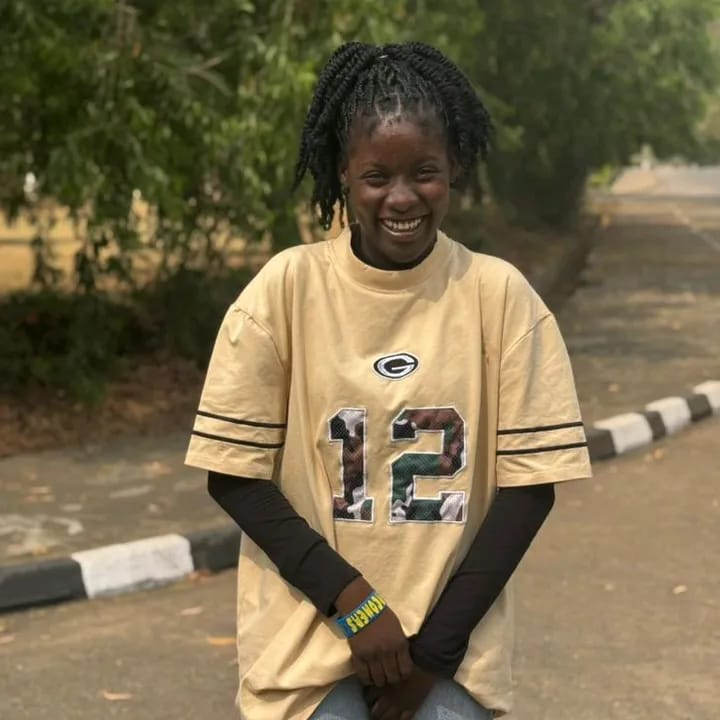

OR
Otega Richard
Landing Page · Brand Keeper
Responsible for the landing page and helping maintain consistency with the AgroSelect brand system.
THE PEOPLE BEHIND AGROSELECT
AgroSelect was built through shared research, design, development and teamwork. Meet the people who contributed to bringing the project to life.
OUR CONTRIBUTORS
Each contributor played a role in shaping AgroSelect, from research and page development to consistency, forms and deployment.
Landing Page · Brand Keeper
Responsible for the landing page and helping maintain consistency with the AgroSelect brand system.
Detail Page · Consistency Check
Worked on the detail page and helped check that the content and visual presentation remained consistent.

Contact & Site Shell · Navigation and Deployment
Worked on the contact page and site shell, including navigation structure and deployment support.
Request / Get Started · Forms and Flows
Led the team and worked on the Get Started experience, including the forms and user flow for crop comparison.
READY TO COMPARE?
See how AgroSelect compares crops using published North-West Nigeria data.